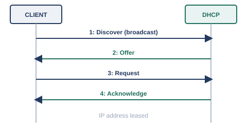
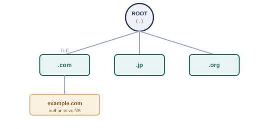

小さな組織の中でネットワークを使い始めた頃は、機器の数もそれほど多くありません。「このIPアドレスはファイルサーバ」「あのIPアドレスは経理部の複合機」といった対応関係は、機器を管理している数人が頭の中で覚えているか、せいぜい1枚の一覧表を共有しておけば十分でした。実際、コンピュータ自身も、hostsファイルと呼ばれる簡単な対応表を手元に持たせておくだけで、名前とIPアドレスの対応づけを済ませることができました。
しかし、組織の外にある無数のコンピュータともやり取りしたい、という段階になると、この方法は破綻します。世界中の誰かがサーバを新設したり、IPアドレスを変更したりするたびに、全世界のコンピュータが持つ一覧表を更新して回ることなど、到底できません。この問題を解決するために生まれたのが、この章の後半で見ていくDNSと、その頂点に立つルートサーバ群です。
まずは、IPアドレスという番号そのものを、機器に自動的に配り届ける仕組みから見ていきましょう。
第4章で見てきたIPアドレスやデフォルトゲートウェイは、本来、機器ごとに手作業で設定する必要があります。しかし、社内に何百台もの機器があるとき、1台ずつ手作業でIPアドレスを設定して回るのは非現実的ですし、設定ミスによるIPアドレスの重複も起こりやすくなります。この問題を解決するのが、DHCPです。RFC 2131として標準化されています※1。
DHCPによるIPアドレスの取得は、4段階のやり取りで行われ、それぞれの頭文字を取ってDORA（Discover, Offer, Request, Acknowledge）と呼ばれています。

配布されたIPアドレスには、多くの場合「リース期間」という有効期限が設定されており、期限が近づくとクライアントは同じDHCPサーバに更新を依頼します。機器がネットワークから長期間離れるなどして更新されなければ、そのIPアドレスは他の機器に再利用できる状態に戻ります。
自宅のインターネット回線、特に光回線やDSL回線では、ルータの設定画面に「PPPoE接続」という項目や、プロバイダから渡された「ID」「パスワード」を入力する欄があることがあります。これは、電話回線の時代からあったPPP（Point-to-Point Protocol）という1対1の接続を確立するための仕組みを、イーサネット（第2章・第3章で見たLANの技術）の上で動かせるようにしたもので、RFC 2516として標準化されています※2。
家庭のルータは、この認証情報をもとにプロバイダ側の設備とPPPoEセッションを確立し、そのセッションを通じてグローバルIPアドレスなどの情報を受け取ります。自宅のルータの設定画面を開くと、この章で扱ったDHCP（ルータから宅内の機器への配布）とPPPoE（ルータからプロバイダへの接続）という、2種類の異なる仕組みが同時に動いている様子を、実際に確認できることがあります。
インターネットの黎明期には、接続されているすべてのコンピュータの名前とIPアドレスの対応関係を1つのファイル（HOSTS.TXT）にまとめ、それを定期的に配布するという運用がとられていました。しかし、接続されるコンピュータの数が増えるにつれて、この方法には無理が生じてきます。更新が反映されるまでの遅延、ファイルサイズの肥大化、そして何より、世界中の変更を1か所で管理すること自体の限界です。
この課題を解決するために設計されたのが、DNS（Domain Name System）です。DNSは、名前の管理を「誰か1人がすべて把握する」のではなく、階層構造に分割し、それぞれの階層を別々の管理者が分担する、という発想に基づいています。全体的な概念や仕組みはRFC 1034※3、具体的なデータ形式や実装はRFC 1035※4として標準化されています。

この階層の頂点に立つのが、ルートサーバです。ルートサーバは、末端のドメイン名そのものを知っているわけではなく、「.comについて知りたければ、こちらのサーバに聞いてください」というように、次に問い合わせるべき先を案内する役割を担っています。この階層を、ルート→トップレベルドメイン（.com、.jpなど）→個別のドメイン、とたどっていくことで、世界中のどの名前についても、最終的には正しい答えにたどり着けるようになっています。
わたしたちが普段、Webブラウザにドメイン名を入力したとき、実際には次のような流れで名前が解決されています。
このキャッシュの仕組みのおかげで、世界中の利用者が同じ人気サイトへアクセスするたびに、いちいちルートサーバまで問い合わせが飛ぶ、という事態が避けられています。また、DNSの問い合わせは、多くの場合、第7章で見たUDPの53番ポートを使って行われます。1回のやり取りで完結する軽量な問い合わせという性質上、コネクションを確立する手間のかかるTCPよりも、UDPのほうが向いているためです（大きな応答データを扱う場合など、一部の状況ではTCPも使われます）。